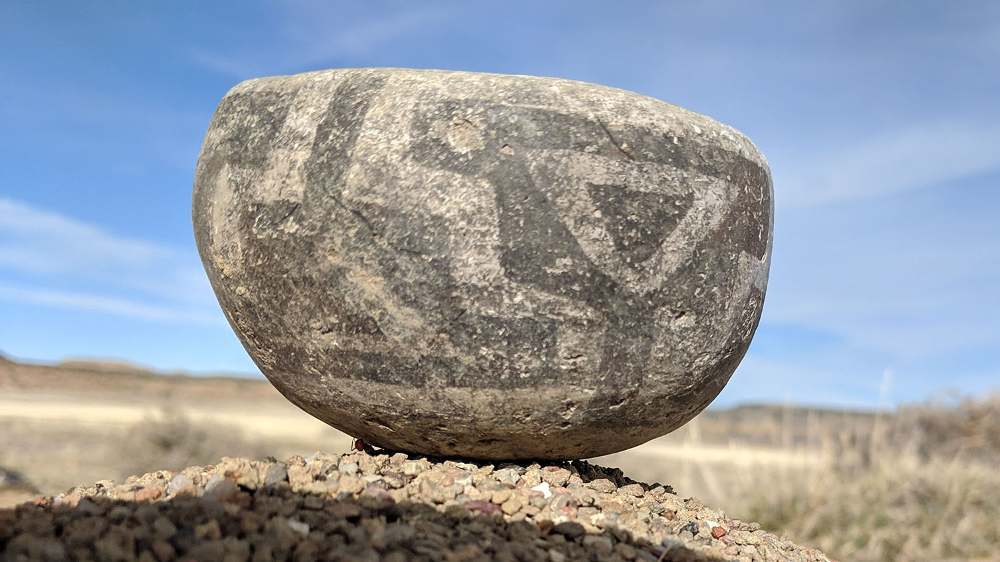
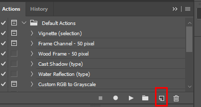
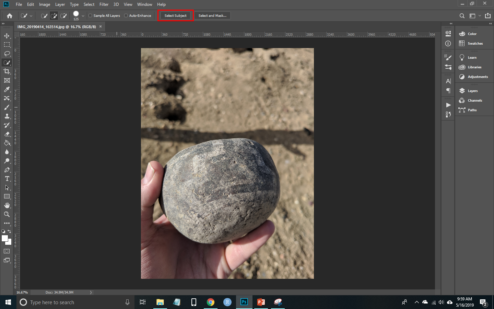
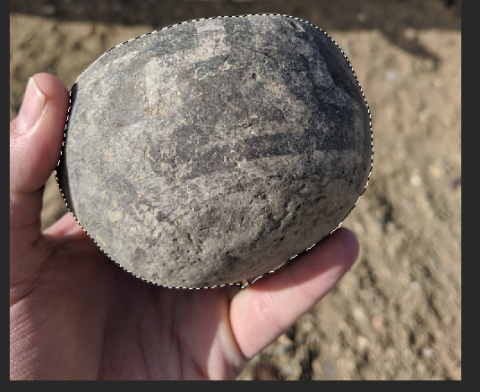
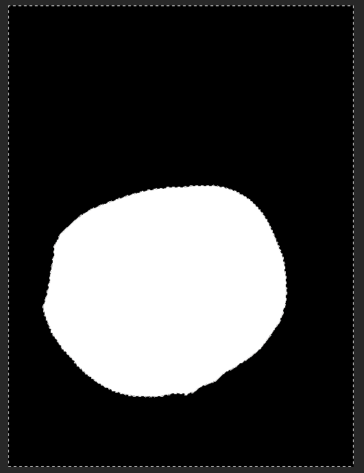
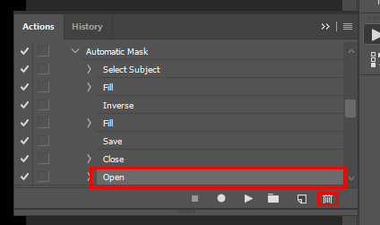
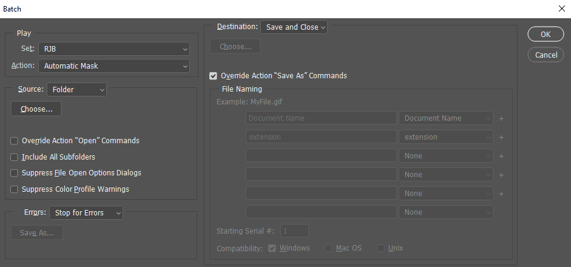
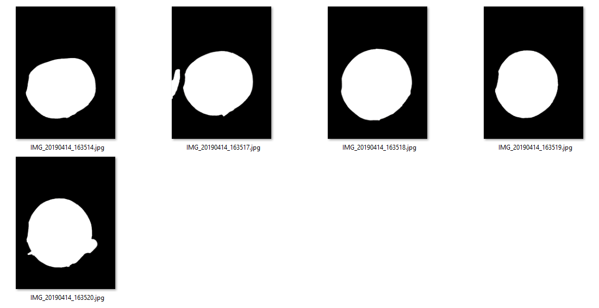

There are a few different ways to automatically mask backgrounds when making a 3D model using photogrammetry, but I’ve struggled to find a method that worked for what I was doing. Photoshop released a new AI feature to automatically select the subject of an image. This post explores how this tool can be used to mask unwanted background features when creating 3D models using photogrammetry. This is not a photogrammetry tutorial, and I assume a basic familarity with Metashape (formerly Photoscan), the software I use for photogrammetry.

My standard process when creating a 360° 3D model of an object is to create a black and white mask of each image by using Photoshop’s Quick Selection Tool, or other selection tools when necessary, to select the object, make it white, and then make everything else black. I use Metashape’s create mask from file option to automatically apply each mask to its corresponding image. This is usually the part of my workflow that requires the most work from me. Running the model can take longer, but I don’t need to do much. Photoshop action scripts speed up the process of making a mask, as I can record the actions to make the image black and white once I’ve selected the object.
I’ve used a similar process to automatically create masks using the new select subject option. Spoiler, the results aren’t as good as doing it by hand, but we’re not quite living in the AI world of my dreams yet.
You’ll need at least Photoshop version 19.1 (I’m using version 20.0.4). It helps to be familiar with Photoshop, and I recommend looking up some basic tutorials if you are not familiar with it.
The model I’ll be making is of a small ceramic seed jar found on the surface of an archaeology site I was visiting in western New Mexico. I just had my smartphone on me (a Pixel XL 2), but I snapped several photos with the jar sitting on the ground, and then I held the jar in my hand and rotated it. This should be a challenging test. I didn’t have much time and the lighting was not great. Having my hand in many of the photos should be the most challenging aspect to remove automatically.
Create Photoshop Action
The first thing to do is to make a copy of all of the photos you’ll be using and place them in a new folder labeled masks. Open one of these images in Photoshop. Access the Actions menu by pressing F9, and press the Create new action button.

I named my action Automatic Mask. Press the Record button and now Photoshop will keep track of everything we do. Press w to access the Quick Selection Tool and you should see the Select Subject button at the top of the screen.

Press that button and you should see the most prominent object selected. The selection worked fairly well. It’s not surprising the out of focus ground was removed, but I wasn’t sure that my hand would be left out of the selection.

Now go to Edit>Fill and make sure the Content is white, the Blending Mode is Normal, and the Opacity is 100%. Press Ok and the object should be white. Now invert the selection by pressing Ctrl+Shift+I, and repeat the Edit>Fill process except this time choose black. You should now have a black and white mask.

Just save the image and then close it. Make sure those two actions are separate as we are recording them and for some reason closing and saving at the same time doesn’t work well. We are still recording, so open the image again, access the Actions menu and press the Stop recording button. You’ll then have to delete the Open step. If you cannot see the steps in the action then click the dropdown arrow next to the action name. Select Open and press the Delete button. You should see six steps once you’re done.
- Select Subject
- Fill
- Inverse
- Fill
- Save
- Close

Now close the image again.
Run the Action
Photoshop allows you to run the action on each photo in a folder automatically. Go to File>Automate>Batch. The last action you made should automatically be selected, but select your action if it is not already. Choose the folder you saved the images in (make sure it is the folder for masks, not the original images (make sure you have backups just in case). The Destination should be Save and Close, and the Override Action “Save As” Commands box should be checked. Press Ok and it will repeat this action for every image. 
Now each image should be a black and white mask. You can see that not every one of these images was perfectly masked, but you can see from the model I made that the masks worked well enough, and this process saved me a lot of time.

The Model
It’s not a perfect model, but I’ve never tried to make a model from an object held in my hand before, so I’ll call this a good result for the circumstances. Feel free to comment if you found this useful or if you have some tips on improvements or a better process.